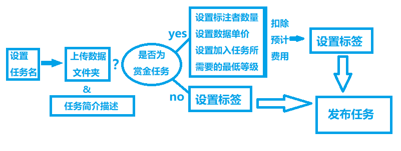
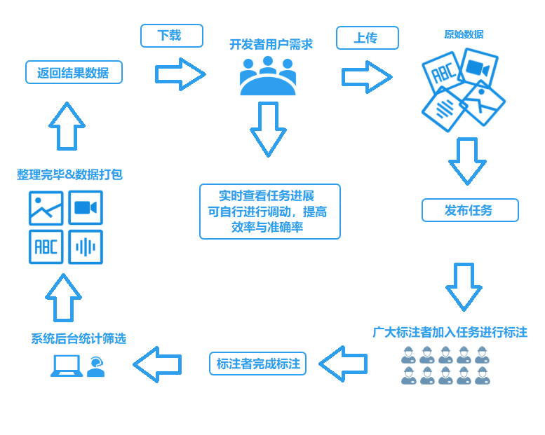
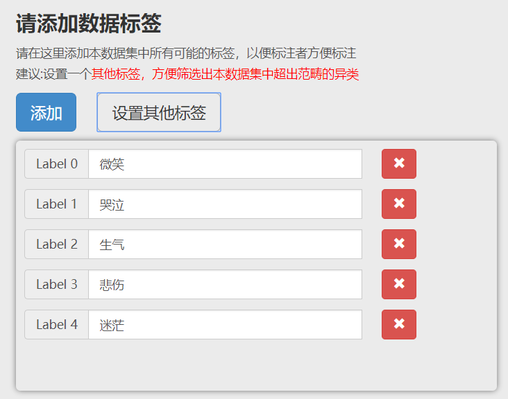
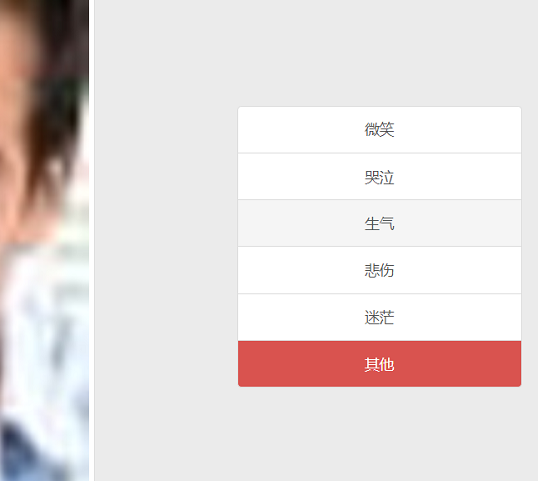

本站主要以实现面向全世界的标注模式、随时随地的标注方式搭建而成，并且本平台完全免费开放，用户只需要注册账户即可成为本平台的一员！
在本平台中，一切数据标注事务统称为任务，开发者用户即是任务的发起人。
具体任务发布流程：
非赏金任务完全开放，任何标注者用户、游客都可以进行标注。
赏金任务，参加该任务的标注者用户能获得相应的工资，但具有限制条件，具体限制条件由开发者设置，满足条件的标注者即可参加标注工作,注意:开发者用户具有绝对的任务管理权，开发者用户能够实时检查标注者用户的标注情况，并可以让非正常标注的标注者用户退出本任务！
任何标注者用户、游客只需要联网，即可以随时随地地进行任务标注。

在登录之后，网页导航栏中有一项为“添加任务”，点击即可进入添加任务界面，在添加任务界面里，开发者用户可以对任务详情信息、条件进行编辑，并将点击上传数据文件夹，任务分为赏金和非赏金任务，发布赏金任务时候，将会扣除最大可能支出（需要标注者数量*数据总量*数据标注单价），任务结束后将会退还剩余赏金，具体流程图前往标注模式查看。注意:发布任务之前务必将所有要投入标注的数据都移到同一文件夹中，然后上传该文件夹，另外，还有设置数据标签环节，开发者用户需要在此事先设置好所有数据中可能有包含的标注。
→
在个人中心界面，“我的任务列表”会显示自己发布所有的任务，点击即可查看详情，对于非赏金任务，则只能查看关于该任务中被被标记次数为多少，而对于赏金任务，开发者用户将可以实时查看加入工作的标注用户的标注情况，可以随机抽查该标注用户已被标注过的数据和对应的标签，并且开发者用户有权将捣乱的标注用户移出本任务。当发布的赏金任务已经有标注用户加入时不可以删除撤回。
本平台的数据皆是一份数据多人标注，最终统计阶段将以少数服从多数的规则进行筛选，标注相同项最多的标签将被采纳，对于赏金任务，标注者最终获取赏金取决最终于被采纳标签个数，标注者用户标签被采纳数量低于60%时默认为不通过，无赏金处理，结算完毕后最终剩余赏金将退还开发者账户。
点击导航栏中的“查看标注任务”，则会看到所有开发者发布的任务，其中非赏金任务可以随时随意地进行标注，而赏金任务则必须加入任务成为标注工作的一员才可以进行标注，同时，一个标注者一次只能加入一个赏金任务，想要加入下一个赏金任务必须完成当前正在进行中的赏金任务。
标注者用户加入赏金任务后，在“个人中心”界面中“我的任务”列表中将会显示你在已加入工作的任务，点击进行标注即可开始开始工作，为了提高任务完成进度，标注者每标注10次才会被记录，也就是说，你每次进入工作界面至少要标注10次才会记录，否则余数部分将不作记录。另外，一个赏金任务将有多个标注者，各个标注者都有各自的任务完成进度，如果本标注者用户已经标注完该任务的所有数据后，而其他标注者用户还未完成，则本标注用户对该项任务的状况显示为“等待审核”，那么该期间本标注用户可以加入另一个赏金任务进行标注！
最终统计阶段，标签将由少数服从多数的规则进行筛选，最终赏金取决于自己的标签被采纳数量，当自己的标签被采纳数量低于自己的总标签量的60%时，默认为不通过，取消赏金评比，无赏金处理！